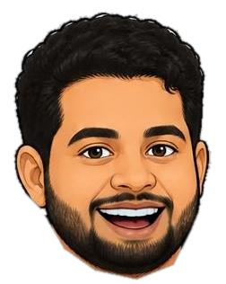
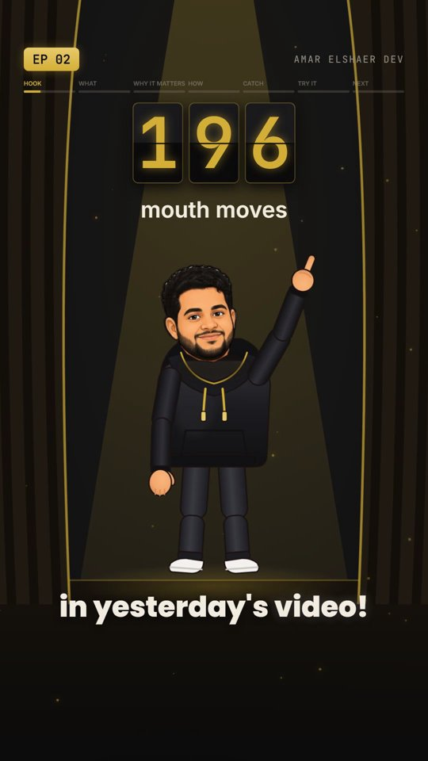
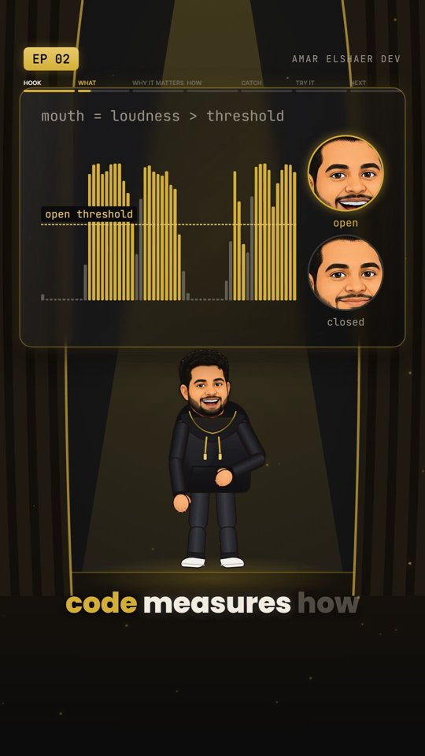
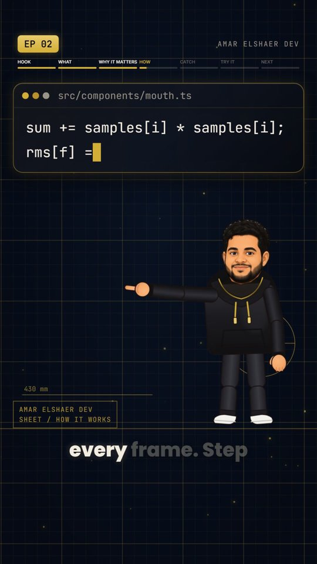
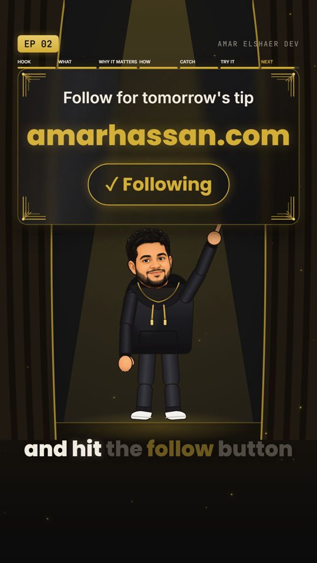
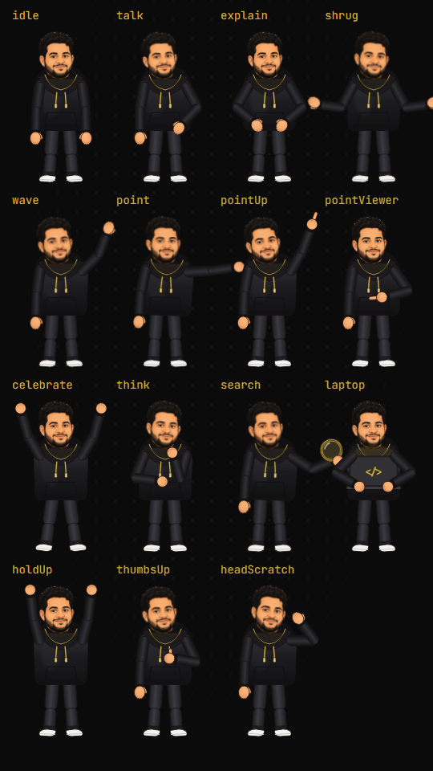

The step-by-step guide to the kit behind my videos: a rigged cartoon of you, lip-sync, word-by-word captions and a free local clone of your own voice. Windows & Mac.
Inside

Chapter 01
You write a short script. The kit turns it into a 30-60 second vertical video where a cartoon of you acts out every sentence, in your own (cloned) voice, with captions and sound effects. No camera, no editing app.




| Step | Tool | Output |
|---|---|---|
| 1. Script | You (or Claude Code) | narration.txt, one paragraph per scene |
| 2. Voice | Qwen3-TTS 1.7B, local, Apache 2.0 | narration.wav at -16 LUFS |
| 3. Word timings | faster-whisper (CPU) | narration.json |
| 4. Scene plan | plan.json → build_episode.py | episode.json (validated) |
| 5. Video | Remotion (React) | 1080×1920, 30 fps MP4 |
Chapter 02
You need Node.js 18+ (for Remotion), Python 3.11 (for the voice) and Git. A GPU makes the voice fast; without one it still works, just slower.
# tools (PowerShell) winget install OpenJS.NodeJS.LTS winget install Python.Python.3.11 winget install Git.Git # the kit git clone https://github.com/FireAmun/remotion-dev-video-kit cd remotion-dev-video-kit npm install # Python env (NVIDIA GPU) py -3.11 -m venv .venv-qwen .venv-qwen\Scripts\python -m pip install torch==2.6.0 torchaudio==2.6.0 --index-url https://download.pytorch.org/whl/cu124 .venv-qwen\Scripts\python -m pip install -r requirements.txt
No NVIDIA GPU? Install torch without --index-url; it runs on CPU.
# tools (Terminal, needs Homebrew: brew.sh) brew install node python@3.11 git # the kit git clone https://github.com/FireAmun/remotion-dev-video-kit cd remotion-dev-video-kit npm install # Python env python3.11 -m venv .venv-qwen source .venv-qwen/bin/activate pip install torch==2.6.0 torchaudio==2.6.0 pip install -r requirements.txt
Apple Silicon (M1-M4) uses the Mac GPU automatically. If the voice step errors on the GPU, run it with PYTORCH_ENABLE_MPS_FALLBACK=1. Intel Macs run on CPU (slow). I built and tested this on Windows; the Mac path uses the same code.
npx remotion studio # opens the preview in your browser
Open the RigTest composition (all 15 poses) and StyleTest (the style kit). On Mac, use python where this guide writes .venv-qwen\Scripts\python, after source .venv-qwen/bin/activate.
~/.cache/huggingface.Chapter 03
The voice is cloned "zero-shot": no training, just one short clip of you. That clip decides everything: the timbre, and also the energy and pace. A calm clip gives you a sleepy narrator.
assets/voice/reference_energy.wav.assets/voice/reference_energy.txt..venv-qwen\Scripts\python scripts\tts_qwen.py public\episodes\test\narration.txt
| Do this | Why |
|---|---|
| Try several clips from your recording and compare by ear | When I switched to a cleaner clip, my voice-match score went from 0.76 to 0.94 with the same model. |
| Pick the most expressive stretch (most pitch movement) | The clone copies your delivery. My first pick sounded "asleep"; the most expressive 11 s fixed it. |
Use ! on hook lines, commas for pauses | The model reads punctuation as energy and rhythm. |
| Write words the way they're spoken | amar hassan dot com, N P X create video, numbers as words. Captions still show the written form. |
| One paragraph per scene, under ~250 characters | Keeps every generation short and stable. |
| Keep the seed; change it only to re-roll a bad take | Same seed = repeatable takes. |
| Leave the levelling on (automatic) | The raw voice is quiet (~-36 dB). It's levelled to -16 LUFS so it's always louder than the sound effects. |
Chapter 04
The character is a puppet: your cartoon head (two images: mouth closed and open) on a vector body with joints. That's what lets it point, type, celebrate and walk instead of being a static picture.
Prompt 1 (with a photo of you attached): Flat vector cartoon of the man in the photo, same face, [hair], [beard], [glasses], wearing a black hoodie with gold details. Front-facing, full body, standing, friendly smile, mouth CLOSED. Plain solid light grey background, clean outlines. Prompt 2 (attach the result of prompt 1): Edit this exact image: keep everything identical and change ONLY the mouth so it is open as if mid-speech, showing upper teeth.
.venv-qwen\Scripts\python scripts\make_head.py closed.png open.png ^
--head 385 37 637 353 --mouth 470 255 590 300 ^
--jaw 385,223 430,284 458,317 538,347 588,331 610,301 637,223
Read the pixel boxes off your image (Windows Paint or Mac Preview show the cursor position). The script removes the background, blends only the mouth from the open image onto the closed one (image tools redraw everything, so this stops the face from jittering), cuts at the jaw and cleans the edges.
src/rig/Puppet.tsx set HEAD: image size, pivot (bottom-centre of the chin) and the two eye boxes (used to draw real blinks).src/theme.ts → character, set your skin tones and outfit colours (sample them from your art).RigTest in Studio and check every pose. Poses are just joint angles in src/rig/poses.ts.
Chapter 05
No AI. About 40 lines in src/components/mouth.ts. For every video frame it decides one thing: mouth open or closed.
// per-frame loudness for (let f = 0; f < frames; f++) { let sum = 0; for (let i = start; i < end; i++) sum += samples[i] * samples[i]; rms[f] = Math.sqrt(sum / Math.max(1, end - start)); } // reference = loud speech, not silence const voiced = rms.filter((r) => r > peak * 0.02).sort((a, b) => a - b); const loud = voiced[Math.floor(voiced.length * 0.9)] || 1; // smooth, then open/close with hysteresis and a minimum hold env += (level - env) * (level > env ? ATTACK : RELEASE); const next = isOpen ? env >= MOUTH_CLOSE : env > MOUTH_OPEN; if (next !== isOpen && held >= MIN_HOLD) { isOpen = next; held = 0; }
The audio comes from Remotion's useAudioData() (@remotion/media-utils). Because it's a pure function of the audio, every render is identical.
Chapter 06
Create a folder like public/episodes/2026-01-01/ and work through these steps. Run one GPU job at a time (voice, then render).
narration.txt: 30-60 s (≈ 75-150 words), one paragraph per scene, written as spoken. Hook in the first 2 seconds..venv-qwen\Scripts\python scripts\tts_qwen.py public\episodes\<ep>\narration.txt.venv-qwen\Scripts\python scripts\timestamps.py public\episodes\<ep>\narration.wav --hint "Remotion, React" (a few tech terms only; never the whole script, or Whisper starts repeating itself).plan.json: one scene per sentence, with a set, what the character does, and items that land on spoken words (atWord). Copy public/episodes/example/plan.json..venv-qwen\Scripts\python scripts\build_episode.py public\episodes\<ep> then npm run lint.npx remotion studio, fix what looks off, then render: npx remotion render Episode out/<ep>.mp4 --codec=h264 --crf=18 (point episodeFile in src/Root.tsx at your folder).{
"chapter": "HOOK",
"display": "My mouth changed shape 196 times in yesterday's video!",
"set": "stage",
"actor": { "scale": 0.8, "beats": [{ "atMs": 0, "pose": "talk" },
{ "atWord": "196", "pose": "pointUp" }] },
"items": [{ "kind": "splitflap", "text": "196", "label": "mouth moves",
"atWord": "196", "x": 540, "y": 430 }]
}
| Building blocks | |
|---|---|
| Sets | stage, coderoom, desk, sky (sunrise / timelapse), chalkboard, library, blueprint, plain |
| Poses | idle, talk, explain, shrug, wave, point, pointUp, pointViewer, celebrate, think, search, laptop, holdUp, thumbsUp, headScratch |
| Items | kinetic, splitflap, label, code, window (terminal / chalk), counter, stamp, steps, waveform, calendar, banner, confetti, book, icon, follow, end |
Chapter 07
The repo ships a Claude Code skill (.claude/skills/daily-video/) that runs the whole chapter-06 workflow from a one-sentence idea, and a CLAUDE.md template with the video rules.
.claude/CLAUDE.md: your name, brand, handle, website, topics, posting time.Chapter 08
| Problem | Fix |
|---|---|
| Whisper transcript repeats the same sentence | Don't pass the script as a prompt; use --hint with a few terms. |
| Captions start early after a pause | Handled: scenes that start a narration paragraph take the exact time from the voice step. |
| Video longer than 60 s | Shorten the narration, not the speed. Check the length right after the voice step. |
| Sound effects louder than the voice | Make sure the voice went through scripts/audio_level.py (automatic in tts_qwen.py). |
| A word is mispronounced | Spell it as spoken in narration.txt (T-T-S, dot com); keep the written form in plan.json. |
| Item covers the character's face | Move the item, shrink the actor (scale), or put him at the side (x: 790, facing: "left"). |
| Studio stutters | Preview only; the final render is frame-perfect. |
Kit code and docs: MIT. Remotion has its own license (free for individuals and small teams; companies may need one: remotion.dev/license). Qwen3-TTS: Apache 2.0. faster-whisper: MIT. Sound effects: CC0 (Kenney via soundcn). The example character is my likeness: replace it with yours before you publish.
Built something with it? Tag me.
amarhassan.com · @amar_elshaer_dev on Instagram & TikTok · Amar Hassan Elshaer on LinkedIn